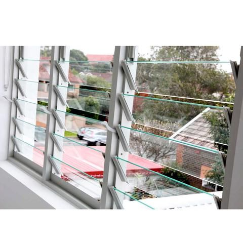

About Our Louver Systems
At Tensorgrid Ltd, we supply high-quality louver glass systems designed to provide natural ventilation, light control, and modern aesthetics. Louver systems are ideal for both residential and commercial applications, offering adjustable airflow while maintaining privacy and protection.
Our louver systems are durable, easy to operate, and suitable for a wide range of window and ventilation designs.
Louver System Specifications
Applications
- Residential buildings
- Commercial spaces
- Schools and institutions
- Bathrooms and kitchens
- Industrial ventilation areas
Louver Glass
Louver glass consists of horizontal glass blades fitted into a frame, allowing controlled airflow while maintaining visibility and light entry.
Standard Blade Size
6 inches (height per blade)
Features
- Allows natural ventilation
- Provides controlled airflow
- Maintains natural lighting
- Easy to clean and replace
- Can be clear, tinted, or obscure
Applications: Windows, Bathrooms and washrooms, Utility areas, Staircases, Ventilation openings
Louver Frames
Louver frames are designed to hold and support multiple glass blades, allowing them to open and close simultaneously for controlled ventilation.
Blade Capacity (Per Frame Set)
- 2 blades
- 3 blades
- 4 blades
- 5 blades
- 6 blades
- 7 blades
- 8 blades
- 9 blades
- 10 blades
(Frames are supplied in pairs depending on installation requirements.)
Features
- Strong and durable construction
- Smooth opening and closing mechanism
- Supports multiple blade configurations
- Suitable for various window sizes
- Corrosion-resistant options available
Benefits of Louver Systems
- Excellent natural ventilation
- Energy-efficient airflow control
- Enhances indoor comfort
- Modern and functional design
- Easy maintenance
Why Choose Our Louver Products?
- High-quality glass and frame materials
- Multiple blade size configurations
- Reliable and durable systems
- Custom sizing available
- Suitable for both new installations and replacements